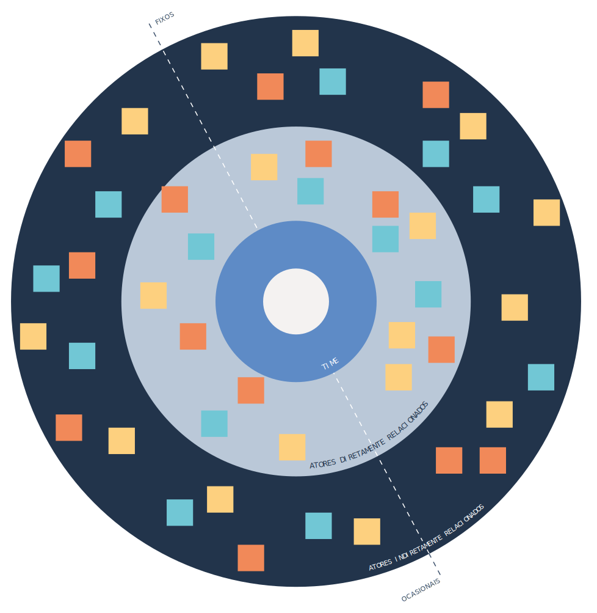
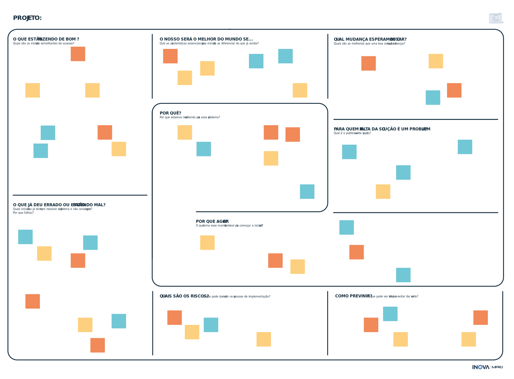
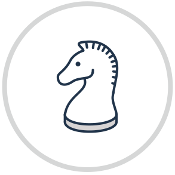
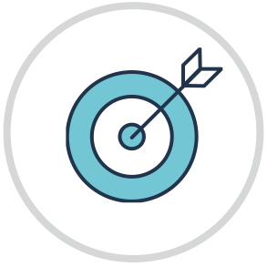
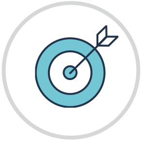

Hoje, o Fluxo de Transformação é o método de trabalho utilizado nos projetos liderados pelo Inova_MPRJ. Foi criado para ser testado como proposta de desenvolvimento de um novo processo de trabalho que possa ser replicado por todo e qualquer órgão de governo e de controle.
O Fluxo de Transformação propõe caminhos detalhados e otimizados para qualquer iniciativa que busque conhecer e resolver problemas sociais. A trilha azul direciona esforços para a abertura de dados e para o monitoramento de problemas graves, buscando compreender profundamente a realidade que pretende mudar. A laranja olha para o que já foi feito, constrói alternativas adaptadas aos contextos locais e testa intervenções com rigor.
A trilha azul, focada no monitoramento e na priorização de problemas, absorve as agendas identificadas pelo “Radar” do Inova_MPRJ. Isto é, as ideias recebidas por meio do formulário de propostas do Laboratório e o trabalho constante de prospecção de sua equipe, no Brasil e no exterior.
O Inova_MPRJ convencionou chamar de “Bússola” seus projetos cujos objetivos principais relacionem-se com abertura de dados, priorização de indicadores e monitoramento de problemas sociais. Ou seja, aqueles que percorrem a trilha azul, originando painéis de indicadores, ou “bússolas”, expostas em plataforma web com acesso irrestrito e atualização dinâmica com novos dados.
Como esta trilha pode receber desafios genéricos das diversas áreas temáticas, espera-se que o planejamento tático do MPRJ sirva como um guia para a priorização dos desafios a serem enfrentados.
Em novembro de 2019, o Inova_MPRJ recebeu sua primeira proposta de desafio via formulário, enviada pelo Grupo de Atuação Especializada em Meio Ambiente (GAEMA). O desafio visava a desenhar estratégia mais efetiva, com uso de tecnologia, para o monitoramento e comunicação do andamento das obras de saneamento previstas na Bacia da Baía de Guanabara relevantes para a sua despoluição, conforme TAC firmado entre MPRJ, CEDAE e Estado do Rio de Janeiro.
Antes de cada projeto começar, o Inova_MPRJ já sabe qual das duas trilhas ele seguirá. Depende da natureza do desafio. Se for de monitoramento e priorização, caminhará pela trilha azul. Caso envolva iniciativas de intervenção, seja na atividade-meio ou fim, irá para a trilha laranja.
Todos os processos de trabalho do Inova_MPRJ começam refletindo criticamente sobre a definição e o entendimento prévio quanto a potenciais problemas ou soluções. Por isso, ambas as trilhas passam pelo mesmo percurso inicial, cujo objetivo é redefinir desafios.
É contra-intuitivo pensar em reformular perguntas que parecem fazer sentido ou ideias de soluções já cristalizadas. Essa é, contudo, uma das grandes contribuições que o design de serviços pode trazer para o setor público. Ter certeza de que se está buscando resolver o problema certo é tão ou mais importante do que encontrar a sua solução.
Antes de mais nada, o Inova_MPRJ elabora o Pontapé Inicial (PPI), o primeiro documento formal do projeto. Ele contém:
O principal objetivo do PPI é anunciar internamente a intenção de trabalhar com o tema, evitando retrabalhos e sobreposições. O documento também serve para contextualizar possíveis interessados em fazer parte do time.
O time é o grupo multidisciplinar alocado para cada projeto. Os participantes se comprometem com todo o planejamento e execução – recebendo treinamentos para tanto ao longo do caminho
É importante entender o que está sendo feito a respeito do tema e abrir espaço para a participação de quem desejar. Para tanto, o Inova_MPRJ encaminha, junto do PPI, um formulário com tais indagações para todos os órgãos da Administração e promotores com atribuição.
É preciso conhecer melhor o contexto do desafio, antes de iniciar a exploração de um terreno desconhecido. Nesse momento, portanto, é importante conversar com os proponentes, ir a campo e fazer uma rápida pesquisa de mesa. É hora de entrar em contato com o que já existe a respeito, termos técnicos e documentos importantes relacionados ao tema.
As visitas iniciais a campo servem para explorar, ainda que superficialmente, a realidade que o projeto deseja mudar. A ideia é, em um ou dois dias, junto aos gestores da ponta, coletar as informações mais relevantes e captar suas visões.
O reconhecimento do terreno é também a primeira oportunidade de contato com especialistas da área, com os dados existentes e com os sistemas de tecnologia da informação utilizados. Os especialistas podem se tornar parceiros e as bases de dados serão insumos essenciais para as fases seguintes.
Em paralelo, separa-se tempo de trabalho para sistematizar os primeiros aprendizados e organiza-se a documentação para o site, que será construído nas etapas seguintes, e para o futuro relatório do projeto. O intuito é criar a cultura de produzir conteúdo de comunicação ao longo de todo o percurso. Assim, as últimas fases não ficam sobrecarregadas.
O Inova_MPRJ envia convites aos interessados para participação nas etapas seguintes. O time ainda não está definido nesse momento.
Os interessados - ainda não comprometidos oficialmente - realizam uma reunião de trabalho para explorar a questão colaborativamente. Em atividade conduzida pela equipe de design do Laboratório, o grupo trabalha para responder perguntas-chave do processo de redefinição do desafio.
Esta etapa busca alinhar as diferentes visões sobre o desafio, consolidar uma visão comum entre os envolvidos e garantir que nenhuma questão relevante fique de fora do escopo do planejamento. O canvas “Redefinindo o Desafio”, serve como guia para o grupo alcançar esses objetivos.
Como de praxe, o Inova_MPRJ e os participantes registram as principais conclusões e aprendizados na minuta de relatório do projeto. Serão informações importantes para montar o Plano de Trabalho ao final da fase de Redefinição do Desafio.
É um exercício de identificação de atores e de seus possíveis graus de envolvimento com a iniciativa. O grupo cumpre esta etapa ao preencher outro canvas – “Mapa de Atores” –, também colaborativamente.
Este mapeamento, também liderado pela equipe de design do Inova_MPRJ, é inicial e certamente sofrerá alterações ao longo da trajetória. No entanto, trata-se de um importante ponto de partida para a fase de mobilização de atores externos.
O “Mapa de Atores” parte do desafio para imaginar quem poderá se relacionar direta ou indiretamente com o projeto. Valem atores internos e externos ao MPRJ. Uma parte dos atores é categorizada como “fixa”, considerando que participará da maior parte das etapas. Enquanto outros serão ocasionais, contribuindo em pontos específicos do trajeto.
A proposição e a validação do cronograma devem ser realizadas em grupo, também neste momento. Todos assinam documentos formalizando suas participações e incluem o cronograma no Plano de Trabalho, o segundo documento oficial do projeto. A data de início do cronograma ocorre sempre após a fase de redefinição do desafio, quando o projeto é lançado oficialmente.
mapa de
atores
Com o desafio melhor definido, os participantes das fases anteriores decidem se comprometer ou não como projeto. A leitura atenta deste relatório é essencial para os interessados ajustarem suas expectativas. Após o fechamento do time, todos seguirão a trilha até o final.
No MPRJ, o time pode ter diversas configurações – a depender das características de cada desafio. Um exemplo de formação mínima envolveria um promotor, um técnico administrativo, um assessor jurídico, dois técnicos periciais do GATE, dois analistas da CSI (quando houver pertinência temática) e dois servidores convidados.
O time envia o Plano de Trabalho para validação da Chefia Superior. A partir da aprovação, o time define o nome do projeto e conta com a colaboração do Inova_MPRJ para criar sua identidade visual e um modelo de relatório para posterior publicação na web.
Entre as informações básicas do Plano de Trabalho estão: o tema do desafio, a trilha que seguirá, a previsão de conclusão e a data de lançamento. Além delas, o time detalha o desafio, o escopo do experimento, os parceiros com suas responsabilidades e o próprio cronograma no formato de diagrama de Gantt.
Também é momento de pensar na melhor dinâmica de trabalho para o grupo e estabelecer os passos da fase seguinte, de aprofundamento.
canvas "Redefinindo o desafio"
Nesse momento, o time também cria um repositório no GitHub, seguindo a estrutura adaptada pelo Inova_MPRJ do Team Data Science Process , da Microsoft. O time preenche as informações até então disponíveis da Carta de Experimento.
Ao longo da trajetória, os times irão treinar e aplicar as habilidades da caixa de ferramentas. Para tanto, o Inova_MPRJ enviará referências de cursos de ensino à distância (EAD), guias e tutoriais. Além disso, promoverá encontros presenciais para discussão e organizará grupos de estudo.
Os times se dividem para explorar ferramentas complementares. Isso traz eficiência para a resolução prática dos desafios. Os elementos da caixa de ferramentas aparecem ao longo das etapas, na medida em que forem úteis para solucionar as dificuldades impostas por cada momento.
O mais importante é ir além do modelo tradicional e teórico em que só o professor fala. A imagem precisa ser mais a da bancada de oficina e menos a da sala de aula. Ou seja, todos debruçados sobre as engrenagens daquilo que se precisa entender como funciona. A ideia e a prática de treinamentos no trabalho visam a captar essa essência.


O Bússola _Baía de Guanabara foi um projeto desenvolvido em parceria com o Grupo de Atuação Especializada em Meio Ambiente do Ministério Público do Estado do Rio de Janeiro (GAEMA/MPRJ) para monitorar as obras de saneamento previstas no acordo celebrado entre o MPRJ, CEDAE e o Governo do Estado do Rio em 2019.
Como é normal em projetos complexos, o entendimento do caminho a ser adotado varia bastante entre os envolvidos. Assim, antes de iniciar as atividades o Inova_MPRJ reuniu representantes de cinco órgãos do MPRJ - todos envolvidos com a temática ambiental e de saneamento - para preencher o canvas “Redefinição do Desafio”.
O acompanhamento das obras e do funcionamento adequado da rede de saneamento não é tarefa trivial. O desafio envolve enxergar de forma contínua uma área territorial extensa, assim como diversos focos possíveis de poluição – que podem fazer com que mesmo as obras não sejam efetivas ou suficientes para o seu propósito.
O objetivo do canvas é tornar evidentes diversas opiniões – mesmo que conflitantes. É necessário, após preenchê-lo, um momento de consolidação e decisão. No projeto Bússola da Baía de Guanabara, os participantes analisaram a definição do projeto construída anteriormente a atividade do canvas. Eles puderam riscar palavras e adicionar outras para reformular o objetivo do projeto baseado no que apareceu na atividade anterior. Assim, ao final consolidou-se colaborativamente a frase que resumia o projeto e que guiaria as atividades futuras.
Levantamento de possíveis parceiros e riscos
Visão ampla do desafio
A repetição desta sequência ocorrerá sempre que houver a identificação de informações relevantes não consideradas anteriormente. Dada a importância dessa fase, o time pode retornar a ela a qualquer momento caso julgue necessário.
Secretarias de governo e seus gestores serão sempre convidados a participar ativamente. Conforme discutido, o fomento a políticas transparentes e estruturantes deve ser interesse comum entre o Poder Executivo e os órgãos de controle.
O canvas “Mapa de Atores”, preenchido na fase de redefinição do desafio, serve como base para a mobilização.
Na etapa específica de mobilização de especialistas e parceiros, o time deve apresentar o projeto para toda a rede e realizar propostas específicas com o que desejam como contribuição de cada um deles.
Todos os atores que optarem por colaborar devem assinar um documento que detalha seu envolvimento. O “Conta com quem e para que” (CCQPQ) serve para formalizar os respectivos níveis de comprometimento com as iniciativas.
O time faz contato com os atores visando a fazer propostas específicas de contribuição para cada um deles. A ideia é agendar reuniões e visitas. Elas ficam muito produtivas quando os times encaminham previamente toda a documentação do projeto.
Além da evidente necessidade de colaboração com outros atores do setor público, é altamente recomendável envolver membros da Academia, centros de pesquisa, especialistas no tema ou em assuntos tangentes ao projeto e organizações da sociedade civil.
Idealmente, os times contam com parceiros externos à organização para superar os desafios impostos por cada etapa. O gestor bem-intencionado e o controlador interessado partem de desejos em comum, de acompanhar a efetividade, os custos e propor ajustes estruturantes em políticas, programas e serviços públicos.
As quatro etapas seguintes, focadas em pesquisa e formação de rede, são apresentadas em forma de loop, pois não terminam em si mesmas. Conhecer especialistas, iniciativas e dados faz com que o grupo se abra para encontrar novos atores, novos projetos e novas bases de dados. E assim sucessivamente.
Não faz sentido reinventar a roda. As perguntas abaixo são tratadas como valores transversais e constantes em todas as práticas do Inova_MPRJ.
Assim, abrevia-se o tempo de desenvolvimento e internalização de novos métodos e ferramentas. E se chega a um uso mais eficiente dos recursos limitados que se possui. A pesquisa de mesa é, portanto, elemento fundamental ao longo de todo o caminho.
O Inova_MPRJ indica os melhores EAD de pesquisa de mesa e o time coordena como dividirá seus esforços para a realização desta etapa. O Laboratório também envia manuais explicando as ferramentas que costuma utilizar para organizar referências e comentários. Destaque para o Miro.
Realizar entrevistas com especialistas também é parte fundamental do processo. É uma forma importante de conhecer a realidade e buscar novas referências. Os entrevistados trazem pontos muitas vezes negligenciados por pesquisas e podem conectar o time a outros especialistas e novos parceiros.
O time organiza a agenda de entrevistas – que podem ser presenciais, por videoconferência ou até mesmo por meio da realização de um evento sobre o tema no MPRJ (como um “Sacada”, evento realizado pelo Inova_MPRJ em sua varanda). É uma boa oportunidade para encaixar a necessidade de conhecer personagens expoentes do assunto e avançar no projeto.
É claro, fazer entrevistas exige preparo e reflexão. Para auxiliar, o Inova_MPRJ encaminha tutoriais, modelos, referências e EAD sobre entrevistas para o time.
O grupo também fica atento para eventos técnicos sobre o tema e coordena sua participação. Palestras, debates e conferências costumam ser boas fontes para atualização nas principais discussões da atualidade.
Começa a busca por dados internos para conhecer o problema com profundidade. Faz sentido olhar para dados da ouvidoria do MPRJ, da Defensoria Pública e do Judiciário como um todo, quando for o caso.
O time coordena com os cientistas de dados do Inova_MPRJ e de outros órgãos do MPRJ a criação de um ambiente de computação na nuvem para o projeto. Começa a programar queries e organizar tabelas com dados pertinentes ao desafio para conhecer a atuação (judicial e extrajudicial) do MPRJ, dos demais órgãos de controle e da Defensoria.
Dados de ouvidoria tendem a mostrar sintomas aparentes de problemas, e não suas causas raízes. No entanto, eles podem ser úteis para direcionar o processo de priorização de indicadores.
O time não deve se alongar demais nessa etapa. Sua função é ajudar nas próximas fases, que exigirão maior tempo de dedicação aos dados. Aqui, trata-se de uma prévia do que virá em seguida.

Uma forma interessante para o time coordenar esforços na pesquisa de mesa é por meio da realização de “pesquisatonas”. Para potencializar horas de pesquisa individuais em uma atividade em grupo que permita troca de aprendizados, o time envolvido no projeto se divide em equipes para, durante um ou mais dias inteiros de trabalho, buscar referências - projetos que abordam o mesmo tema, notícias, artigos acadêmicos, normativas, ferramentas e iniciativas já existentes.
Ao final, o time se reúne para processar e discutir os resultados, levantar os pontos mais relevantes das pesquisas e definir o que fará parte do relatório. Como sempre, o relatório e o site são atualizados em tempo real.

A primeira “Bússola”, responsável por capitanear a construção deste Fluxo da Transformação, se propôs a explorar a prestação de contas da gestão hospitalar no Rio de Janeiro. Hoje, a maior parte das Organizações Sociais de Saúde (OSSs) consegue monitorar dados por meio de sistemas próprios. No entanto, propriedades importantes do bom monitoramento se perdem no caminho até o Executivo, instituições de controle e sociedade civil.
Com todos a bordo, a equipe responsável iniciou estudo aprofundado sobre bases de dados disponíveis (incluindo ouvidoria MPRJ) e mergulhou no funcionamento dos sistemas hospitalares. A ideia era conhecer o fluxo de dados de ponta a ponta - das unidades ao DATASUS.
A partir do conhecimento adquirido, foi possível estimar com maior precisão o custo de obtenção de cada informação, assim como suas prováveis frequências de atualização e confiabilidade. Eram os primeiros passos para a priorização de indicadores e construção das estratégias de acesso – via colaboração ou judicialmente.
Para montar o “quebra-cabeça”, entrevistaram quem mais entende do assunto: gerentes de TI de unidades hospitalares, representantes de fornecedores de sistemas e membros do Ministério da Saúde.
Para enfrentar um desafio tão complexo e multifacetado, o Inova_MPRJ estabeleceu parcerias com os Instituto Veredas e República, para revisões sistemáticas de políticas públicas informadas por evidência; com a Amazon Web Services e a NTT, para a montagem da arquitetura de dados utilizando computação em nuvem; e com a Secretaria Municipal de Saúde de Volta Redonda, para implementar o piloto no Hospital São João Batista.
Levantamento de bancos de dados
Raio-x dos sistemas e fluxos de informação hospitalares


Ao final o time elabora, em conjunto com os parceiros responsáveis pelas soluções em nuvem, o documento “Plano de Construção do Protótipo”. Ele serve para guiar as fontes nas configurações dos fluxos de transmissão dos dados e a posterior construção do painel.
A partir desta etapa, é possível confirmar o ranking final de prioridades, ratificando os poucos e importantes indicadores que farão parte do painel. A confirmação se dá pela revisita às estimativas subjetivas da atividade do lado sombrio. Custo e incidência dos problemas na unidade em que os dados foram coletados já podem ser medidos.
Com o acesso aos dados coletados em bloco, o time deve começar a examiná-los. Análises exploratórias resumem e descrevem as principais características dos conjuntos de dados, preferencialmente por meio de recursos visuais.
Também é momento de ganhar tempo e descobrir quais são as principais dificuldades de análise impostas pelo banco. Tudo isso com a ajuda da equipe de ciência de dados do Laboratório de inovação, que aproveitou para encaminhar referências e EAD sobre dados massivos e ETL.
O ranqueamento dos problemas é gerado automaticamente por uma planilha configurada pelo Inova_MPRJ. Nela estão presentes os valores preenchidos tanto pela atividade do lado sombrio e pela confirmação após a análise exploratória.
Nesse momento, também há a opção por seguir pela via de alguma modalidade de Inovação Aberta. O desafio está suficientemente definido para contar com a criatividade e expertise de outras organizações. Caso o processo siga para Inovação Aberta, tanto o restante da trilha azul quanto o da trilha laranja subsequente serão percorridos pelos contratados para a concepção e implementação da solução.
O time, em conjunto com seus parceiros, define qual será a delimitação para o protótipo de exploração e visualização de dados. As secretarias de Estado podem ser aliadas especialmente importantes nesse momento, pois sabem melhor do que ninguém escolher unidades que serão representativas das demais; e podem antecipar obstáculos.
Para tornar o acesso aos dados mais fácil, o Inova_MPRJ produziu documentos que embasam legalmente o pedido de acesso às cópias. Afinal, o MPRJ tem prerrogativa legal de acesso incondicional a qualquer base de caráter público ou relativo a serviço de relevância pública - conforme Leis Complementares n. 106/03 e 75/93.
Antes da obtenção dos dados na ponta, é importante delimitar o escopo do projeto. Em outras palavras, determinar que unidades ou regiões serão monitoradas inicialmente. Se o projeto envolver educação pública, por exemplo, quais serão as unidades escolares ou regiões-alvo do primeiro painel?
Reunir e expor todo o conhecimento sobre determinado assunto pode ser útil para enciclopédias ou estudos acadêmicos, mas não para orientar ações. Qualquer planejamento tático e operacional precisa facilitar o trabalho dos gestores ao orientá-los para aquilo que é mais importante.
As atividades de seleção e priorização de indicadores são, portanto, parte essencial e um dos diferenciais do método de trabalho proposto. É o desafio de encontrar as questões mais graves; e com soluções potencialmente simples.
O time realiza diligências aos locais de produção e armazenamento dos dados. Os principais objetivos são conhecer os sistemas e conseguir cópias dos bancos de dados utilizados - para ganhar tempo enquanto o acesso direto e contínuo não é configurado.
A opção pela ida ao local e realização de cópia integral dos bancos de dados tem mais justificativas. Qualquer outra forma de recebimento dos dados (arquivos CSV ou views dos bancos) não permite garantir a completude e fidelidade dos dados ao conteúdo integral dos bancos. Há o risco de manipulações e filtros antes da extração. Por isso a importância de ir ao local e conferir a realização da cópia dos dados.
Com o intuito de maximizar os resultados da visita, o time, com o apoio do Inova_MPRJ, vai ao local levando consigo HDs externos, ofícios de requisição (ou mandados de busca e apreensão, se houver resistência) e roteiro de perguntas sobre o sistema e bancos. Os promotores com atribuição estão totalmente a par do projeto e podem se valer das requisições de acesso redigidas em colaboração com o Inova_MPRJ.
Lado sombrio
O “lado sombrio” é a atividade que o Inova_MPRJ adaptou da Digital Society School para usar a criatividade na seleção de indicadores críticos e prioritários. Com uma sessão de design de serviços, a atividade provoca os participantes a se imaginarem na posição de um gestor extremamente ineficiente e corrupto.
O que fariam para desperdiçar ou roubar mais recursos; e para sabotar a finalidade daquela unidade de serviço público? E como fariam para cobrir seus rastros e dificultar o controle?
Lado da luz
Em seguida, virando de lado, a equipe é provocada para imaginar quais dados precisaria expor para evitar que o gestor ineficiente e corrupto consiga esconder seus feitos. Os indicadores são decompostos em variáveis, têm suas probabilidades de custo de coleta/produção de dados estimadas (nas principais unidades), e são classificados por gravidade.
O resultado traz uma primeira noção de prioridades e de criticidades de fatores que explicam e compõem o problema.
A visita também pode ser importante para confirmar as estimativas dos especialistas sobre valor e frequência dos indicadores. No lado sombrio, a discussão se concentrou apenas em estimativas.
O resultado desta etapa é a coleta de cópias dos bancos e de respostas sobre os sistemas de tecnologia da informação utilizados. Também vale colher o compromisso do responsável pela unidade para complementar as respostas técnicas em caso de necessidade futura. Com essas informações, já se pode começar a configuração de um fluxo contínuo de coleta dos novos dados que serão gerados pela unidade.
O time registra as informações pertinentes nos documentos do repositório do GitHub, em especial as relativas à coleta de dados.
Em meio à crise da COVID-19, o Inova_MPRJ foi convocado para apoiar a Força Tarefa montada pela instituição. Para tanto, delimitou a priorização de indicadores às informações relacionadas ao tratamento do vírus. Da mesma forma, expandiu seu olhar para o monitoramento da rede de saúde – a visão do todo era uma necessidade.
Em trabalho remoto, a equipe desenvolveu versão adaptada da atividade Lado Sombrio, utilizando formulários online para coletar a visão de especialistas. A análise das respostas sobre gravidade e custo de acesso a cada registro resultou no grupo de indicadores prioritários. A priorização direciona a atividade de todos os órgãos de governo da mesma maneira. Afinal, todos estão comprometidos com a melhoria dos serviços de atenção à saúde.
Sobre o acesso a dados de unidades específicas, a estratégia de parceria funcionou em Volta Redonda, onde a prefeitura concordou em fornecer os dados. A Secretaria de Estado de Saúde (SES), contudo, recusou o pedido de acesso aos bancos de dados dos hospitais sob sua gestão.
A recusa da SES era infundada e ilegal, já que o MP tem prerrogativa para acesso incondicional a qualquer base de dados de interesse público. Para fazer valer o direito, o Inova_MPRJ apoiou a Promotoria de Tutela Coletiva da Saúde em Duque de Caxias para impetrar mandado de segurança contra o Secretário de Estado de Saúde.
O time responsável pelo projeto estabeleceu acesso aos sistemas que precisava enxergar e apoiou a Força Tarefa na montagem das requisições necessárias para conexão aos bancos não abertos.
Requisições
Estratégia judicial de acesso
Priorização de indicadores



Com relação aos dados posteriores à obtenção das cópias dos bancos, sua coleta ocorrerá pela nuvem, de forma automatizada e contínua. O time, que já sabe exatamente o que precisa após as análises das cópias estáticas das bases, programa uma forma segura de coleta incremental de dados via Internet.
Também programa uma rotina de coleta, definindo a frequência de atualização que deseja para os dados que compõem os indicadores prioritários. Sempre de modo a minimizar o impacto sobre os sistemas da unidade.
Somente por meio da coleta contínua de dados é possível acrescentar novos indicadores, fazer novas perguntas sempre que necessário e utilizar inteligência artificial. Já que a ideia não é construir monitoramentos engessados e sem flexibilidade.
Os dados começam a chegar e uma arquitetura na nuvem faz com que venham em formato estruturado no armazém de dados, prontos para análise. Nesta etapa e nas seguintes, o conhecimento acerca de soluções digitais, notadamente tecnologias e serviços de computação em nuvem, passa a ser parte fundamental da trajetória.
Acréscimo de novos indicadores
Programação de uma rotina de coleta
Programação de coleta de dados
Na hipótese em que parte dos dados não exista, o time coordena com os gestores a sua produção – ou dá suporte para uma estratégia de cobrança pelo promotor. Todos trabalham com parceiros externos para tornar acessível ao gestor público meios de baixo custo para a produção dos dados.
Se houver contencioso judicial, o time trabalha com o indicador seguinte do ranking de prioridade. Além de continuar acompanhando o processo.
É hora de testar hipóteses e começar a construir modelos estatísticos. O time mergulha nos dados, combinando bases e aprofundando análises. Talvez existam dados suficientes para criar modelos de análise preditiva que informarão alertas preventivos.
O Inova_MPRJ encaminha referências de EAD e guia o time durante construção do relatório. É importante que todos os códigos e análises estejam documentados e abertos. O time atualiza os documentos e códigos relativos à modelagem, seus resultados, disponibilizando-os no repositório do GitHub.
A etapa de desenho de alertas e visualizações visa a combinar design, ciência de dados e soluções digitais para construir um primeiro modelo do painel. O time exerce a criatividade para pensar em como deseja mostrar os dados, em como criar possíveis cruzamentos e em quais seriam os alertas mais importantes.
O protótipo precisa testar visualizações com design amigável e começar a criar os modelos de alerta. O time também idealiza um fluxo de atividades a partir dos alertas, a ser automatizado e contendo medidas por parte da Secretaria de Governo responsável e pelas Instituições de Controle.
Finalmente, o desenho se transforma em um painel para controle de indicadores e envio de alertas, inseridos em portal web para acesso irrestrito por qualquer gestor, controlador ou cidadão. Com o apoio do Inova_MPRJ e outros atores, o time cria uma versão do painel para dispositivos móveis, permitindo formas de interação com a sociedade.
Para encerrar a trilha azul, o time finaliza o relatório, com os objetivos de atingir o público especializado e de gerar base documental para peças de negociação e contencioso judicial – se for necessário.
Como o grupo seguiu as melhores práticas de documentação, registrando eventos e aprendizados fase a fase, conseguiu diluir o trabalho ao longo da trajetória. A equipe de design do Inova_MPRJ fica responsável por transformar tal consolidação em um relatório, normalmente em html, que conta a história do projeto e o caminho percorrido. Além do relatório ajudar na gestão de conhecimento do próprio laboratório, ele serve de inspiração para outros órgãos ou instituições.
Todos os desafios que seguirem pela trilha azul serão atrelados a campanhas de comunicação. O objetivo é expor informações relevantes sobre os problemas evidenciados e dar luz à importância de programas ou projetos que visem a minimizá-los.
O time, junto do Laboratório e com apoio da Coordenadoria de Comunicação do MPRJ, cria estratégia de comunicação e peças gráficas para divulgar o projeto.
O principal formato do relatório será o de website, o que faz dele a principal peça da campanha de comunicação. Além dele, a campanha mas também pode utilizar outros recursos capazes de impactar seu público alvo – incluindo realidade virtual, organização de eventos e exposições.
O objetivo será sensibilizar agentes de transformação ao provar que determinado problema existe, que é grave e que o governo precisa priorizá-lo.
Com o portal em funcionamento, é provável que ele gere alertas para tomadores de decisão em algum momento próximo. Em outras palavras, dado que a priorização selecionou indicadores de alta gravidade, com problemas de frequências provavelmente elevadas nas unidades, é razoável assumir que os alertas não tardarão a aparecer.
Os alertas podem ser oriundos da não produção de dados críticos ou da variação alarmante dos indicadores monitorados.
Com o passar do tempo, o time poderá fazer novas perguntas, adicionar ou alterar indicadores, e contar com inteligência artificial para prever problemas que ainda não ocorreram.
Conforme definido na etapa de desenho dos alertas, eles já viriam com documentos para facilitar providências por parte dos promotores com atribuição.
Em havendo necessidade de intervenção para corrigir o problema revelado pelo alerta, o fluxo laranja orienta as ações. Elas podem ocorrer em parceria com o Executivo ou à sua revelia, pela via judicial.

protótipo do alerta desenhado para o projeto Bússola Gestão Hospitalar
Esta é a versão 1.0 do Fluxo de Transformação. O Inova_MPRJ pretende continuar testando suas premissas na prática, tanto nos projetos em andamento quanto naqueles que iniciar ao longo de 2020. Nosso maior entusiasmo está em compartilhar o fluxo como uma plataforma de aprendizado conjunto e debates.
Sabemos que um desafio será não intimidar o usuário do método. Não custa lembrar: o fluxo, em todas as suas etapas, foi idealizado para o trabalho em equipe, com divisão de tarefas. Para facilitar, construímos ferramentas didáticas de comunicação, como as imagens das trilhas e este relatório em html. Buscamos mostrar as principais etapas de forma geral e mergulhar de modo detalhado quando necessário.
Outro desafio interessante será testar o fluxo com diferentes pontos de início. Imaginamos que o Inova_MPRJ será chamado a trabalhar em apoio a usuários que já tenham projetos em andamento para a investigação e solução de problemas. Nosso objetivo é conseguir aproveitar o que já foi feito, realizar tarefas imprescindíveis do fluxo que deveriam ter ocorrido e seguir adiante.
Durante o ano de 2020 e até a próxima versão, teremos mais estudos de casos para relatar. E, para cada etapa do fluxo, aqui concebidas conceitualmente, faremos mais pesquisas e testes, sempre em busca do que já existe de bom e com o objetivo de aprimorar ainda mais.
Nossa expectativa é de atualizar o fluxo, em versões subsequentes, sempre registrando o que for alterado. Agradecemos desde já por todas as críticas, sugestões e comentários que iremos receber. Agradecemos mais ainda pela força e o apoio em vibrar com a gente pelo aperfeiçoamento da atuação das instituições governamentais e de controle. Registraremos nas próximas versões os nomes e as filiações de todos os que contribuírem. #vamotime
A relação e alguns modelos de documentos utilizados ao longo do fluxo são os seguintes:
Na versão adaptada do TDSP da Microsoft, o Inova_MPRJ sugere a documentação do projeto em um repositório próprio e com organização específica de pastas no GitHub (veja o modelo), contendo os seguintes documentos:


 

Procurador-Geral de Justiça
José Eduardo Ciotola Gussem
Subprocuradoria-Geral de Justiça de Planejamento Institucional
Maria Cristina Palhares dos Anjos Tellechea
autoria (inova_mprj)
Beatriz Ferreira
Bernardo Chrispim Baron
Breno Gouvêa
Daniel Lima Ribeiro
Gabriel Delman
Helena Coelho
Júlia Oliveira Rosa
Leonardo Santanna
Letícia Albrecht
Manuella Caputo
Marcelo Coutinho
Matheus Donato
Redação
Beatriz Ferreira
Breno Gouvêa
Júlia Oliveira Rosa
Revisão
Beatriz Ferreira
Breno Gouvêa
Daniel Lima Ribeiro
Júlia Oliveira Rosa
Leonardo Santanna
Diagramação
Beatriz Ferreira
Gabriel Delman
Letícia Albrecht
Este material é disponibilizado sob licença Creative Commons Atribuição-Não Comercial-Compartilha Igual 4.0 Internacional (CC BY-NC-SA 4.0). Você é livre para compartilhar e readaptar o conteúdo para fins não comerciais, desde que cite a fonte original.
A licença não inclui trechos de texto ou mídia de outros autores reproduzidos no post. Verifique com o autor do trabalho original sobre as condições para compartilhamento e reuso.
Por favor, cite esse trabalho da seguinte maneira: Ministério Público do Estado do Rio de Janeiro. 2020. Fluxo de Transformação: uma introdução ao método de trabalho do Inova_MPRJ. Rio de Janeiro